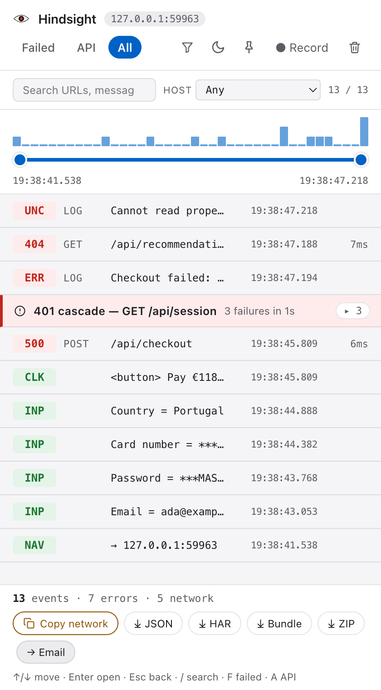
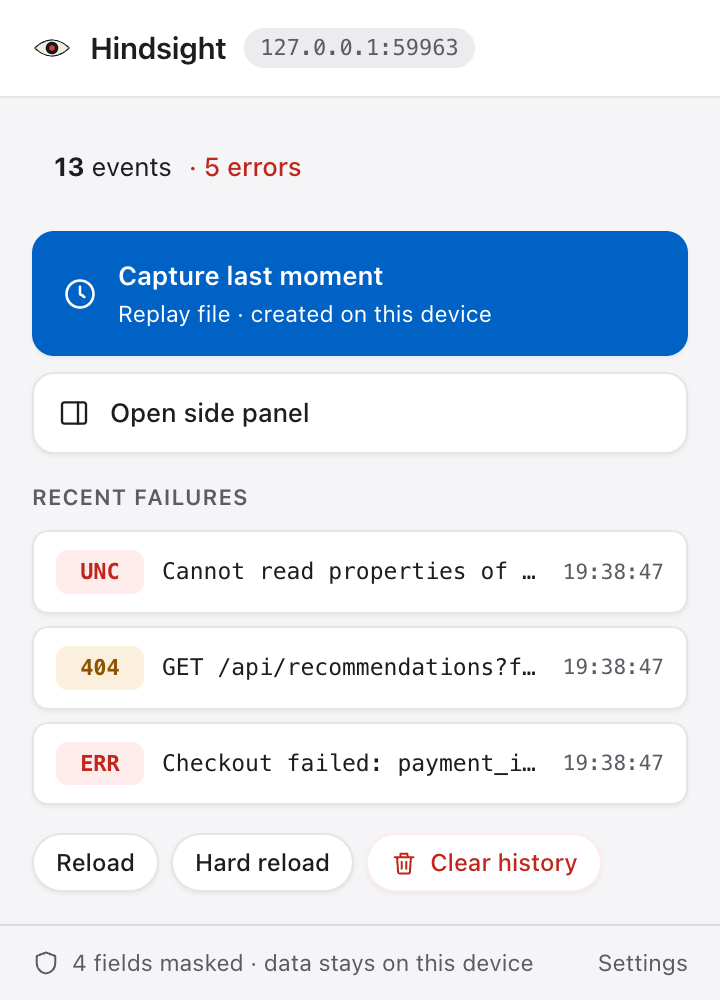
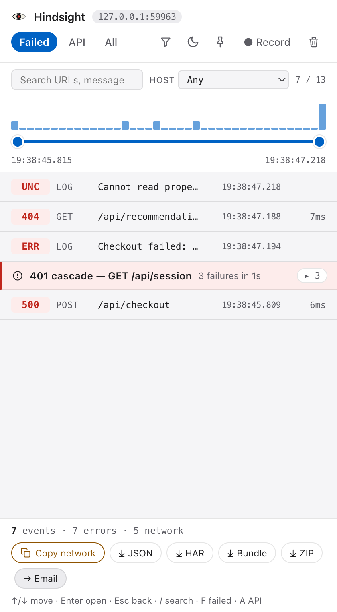
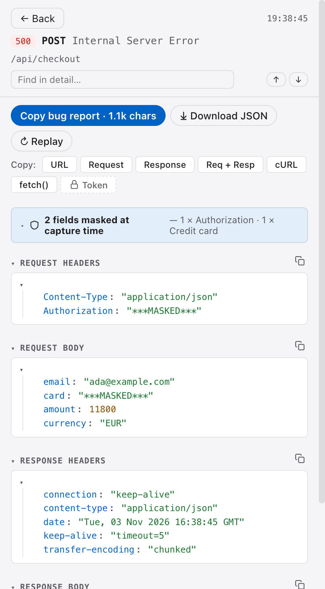
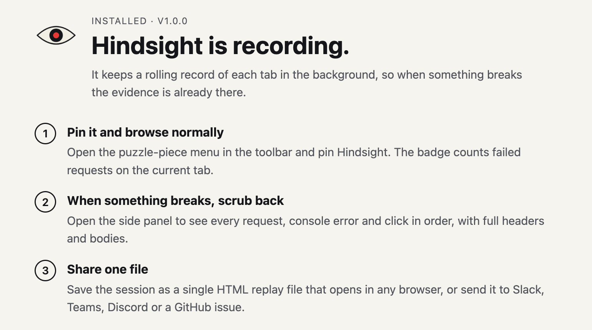
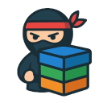

Hindsight
Passive capture of network, console and actions; scrub back and share a replay file. Ağ, konsol ve eylemlerin pasif kaydı; geri sarın ve replay dosyası paylaşın.
You are hereBuradasınızHindsight quietly records network calls, console errors, clicks and inputs while you work. When something breaks, scrub back to the moment it happened and hand over one file that explains the bug. Everything stays on your device. Hindsight siz çalışırken ağ çağrılarını, konsol hatalarını, tıklamaları ve girişleri sessizce kaydeder. Bir şey bozulduğunda o ana geri sarın ve hatayı kendisi anlatan tek bir dosya paylaşın. Her şey kendi cihazınızda kalır.
Edge, Brave, Arc and other Chromium browsers install it from the Chrome Web Store. Edge, Brave, Arc ve diğer Chromium tarayıcılar Chrome Web Store'dan yükleyebilir.


A tester presses Pay and sees a blank error. Nobody had DevTools open. This is what the timeline held anyway. Bir test uzmanı Öde'ye basıyor ve boş bir hata görüyor. Kimse DevTools'u açmamıştı. Zaman çizelgesinde yine de şunlar vardı.
Click on <button> Pay €118. The email, password and card fields before it are already recorded, the last two masked.
<button> Pay €118 tıklaması. Önceki e-posta, parola ve kart alanları zaten kayıtlı; son ikisi maskeli.
/api/checkout answers 500 with payment_intent is missing. Request and response bodies are kept.
/api/checkout 500 dönüyor: payment_intent is missing. İstek ve yanıt gövdeleri saklanır.
The app retries its session three times and gets 401 each time. Hindsight groups them into one 401 cascade row by origin and error class. Uygulama oturumu üç kez yeniliyor, her seferinde 401. Hindsight bunları origin ve hata sınıfına göre tek bir 401 zinciri satırında toplar.
The page throws Cannot read properties of undefined (reading 'clientSecret'). The stack trace comes with it.
Sayfa Cannot read properties of undefined (reading 'clientSecret') fırlatıyor. Stack trace'i de yanında.
Country = Portugalform girişleri, etiketiyle: Country = PortugalOnly while you press Record.Yalnız Kayıt'a bastığınızda.
The panel opens next to the page and keeps recording while you browse. Drag the scrubber to narrow the window, filter to failures, open any row for headers, bodies and the stack. Panel sayfanın yanında açılır ve siz gezinirken kaydetmeye devam eder. Aralığı daraltmak için kaydırıcıyı sürükleyin, hatalara süzün, başlıklar, gövdeler ve stack için herhangi bir satırı açın.


Masking runs at capture time, so the original value never reaches storage. There is nothing to leak later, because it was never kept. Maskeleme yakalama anında çalışır; orijinal değer depolamaya hiç ulaşmaz. Sonradan sızacak bir şey yoktur, çünkü hiç saklanmamıştır.
Hindsight sends nothing unless you click Send, Replay or a download.Siz Gönder'e, Replay'e ya da indirmeye basmadıkça Hindsight hiçbir şey göndermez.
No analytics, no crash reporting, no usage pings. There is no Hindsight server to send them to.Analytics yok, hata raporlama yok, kullanım pingi yok. Gönderilecek bir Hindsight sunucusu da yok.
Captures live in chrome.storage.local. Archived sessions expire after 7 days.Kayıtlar chrome.storage.local'da durur. Arşiv oturumları 7 günde silinir.
MIT licensed. Every line that could make a request is in the public repository.MIT lisanslı. İstek atabilecek her satır açık depoda.
Authorization Cookie Set-Cookie X-API-Key X-Auth-Token Proxy-Authorizationpassword, secret, token, ssn, pinparola ve kart girişleri, kart autocomplete alanları, password, secret, token, ssn, pin adlı alanlar1.0 dropped every permission the code did not use. Replay asks for one site at a time, and you can revoke it in Settings → Privacy → Replay access. 1.0, kodun kullanmadığı her izni kaldırdı. Replay her seferinde tek bir site için izin ister; Ayarlar → Gizlilik → Yeniden gönderme erişimi'nden geri alabilirsiniz.
| Request or response bodyİstek ya da yanıt gövdesi | 200 KB |
| Input value, console messageGiriş değeri, konsol mesajı | 10 KB |
| Per-tab buffer (rolling)Sekme başına tampon (kayan) | 200 events (up to 2000) or 2 MB200 olay (2000'e kadar) ya da 2 MB |
| Archived sessionsArşiv oturumları | 30, kept 7 days30, 7 gün |
A capped value ends with a visible …[truncated] marker, and exports say how many earlier events aged out.
Sınıra takılan değer görünür bir …[truncated] işaretiyle biter; dışa aktarımlar kaç eski olayın düştüğünü yazar.
| Permissionİzin | WhenNe zaman | WhyNeden |
|---|---|---|
storage |
installkurulum | local capture buffer and settingsyerel kayıt tamponu ve ayarlar |
unlimitedStorage |
installkurulum | no quota errors on busy days; the limits above still applyyoğun günlerde kota hatası olmaz; yukarıdaki sınırlar yine geçerli |
activeTab |
installkurulum | error screenshots on a tab after you open Hindsight thereHindsight'ı açtığınız sekmede hata ekran görüntüsü |
sidePanel |
installkurulum | the side panelyan panel |
notifications |
optionalopsiyonel | cascade notifications, asked when you turn them on in Settings → Detectionzincir bildirimleri, Ayarlar → Algılama'da açınca istenir |
<all_urls> |
optional, per siteopsiyonel, site başına | Replay asks for the one origin you replay againstReplay yalnız yeniden gönderdiğiniz origin için ister |
| content scriptsiçerik betikleri | all sitestüm siteler | observe the page's own fetch, XHR and console; they make no requestssayfanın kendi fetch, XHR ve konsolunu izler; kendileri istek atmaz |
Full detail in the privacy policy. Ayrıntılar gizlilik politikasında.
Benchmarks run in CI and block a merge when they go over budget. Ölçümler CI'da koşar; bütçe aşılırsa merge engellenir.
added to a fetch call, p95 (budget 0.5 ms)fetch çağrısına eklenen süre, p95 (bütçe 0.5 ms)
added to an XHR call, p95XHR çağrısına eklenen süre, p95
to render 1000 events in the panel (budget 200 ms)panelde 1000 olayı çizme süresi (bütçe 200 ms)
automated tests passing on the 1.0 build1.0 sürümünde geçen otomatik test
English and Turkish, light and dark.Türkçe ve İngilizce, açık ve koyu.

Same rules for all three: no account, no server, your data stays in your browser. Üçünde de aynı kurallar: hesap yok, sunucu yok, veriniz tarayıcınızda kalır.
Passive capture of network, console and actions; scrub back and share a replay file. Ağ, konsol ve eylemlerin pasif kaydı; geri sarın ve replay dosyası paylaşın.
You are hereBuradasınız
Copy a page's access token, storage and cookies in one click, and paste them into another environment. Bir sayfanın access token'ını, storage'ını ve çerezlerini tek tıkla kopyalayın, başka bir ortama yapıştırın.
Valid Turkish test data (TCKN, VKN, IBAN) and one-click form filling with preview and undo. Geçerli Türkçe test verisi (TCKN, VKN, IBAN) ve önizleme ile geri almalı tek tık form doldurma.